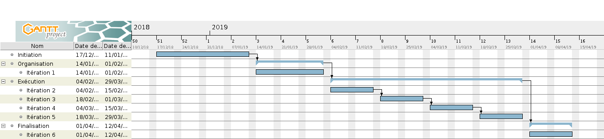
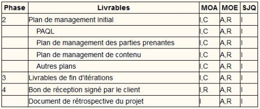

Dans le cadre de l'UE Projet du M1 Informatique de l'université Paul Sabatier, nous nous sommes engagés à mener à bien un projet proposé par l'équipe pédagogique de la filière DC.
Ce document présente notre plan de gestion, c'est à dire les processus et informations que nous utiliserons pour mener à bien le projet.
Le document de présentation du projet (http://departement-informatique.univ-tlse3.fr/master-dc/wp-content/uploads/sites/2/2018/12/tache2-optimisation-1.pdf : tâche 2.3) fait office de charte du projet.
La méthode de gestion de projet appliquée (inspirée d'OpenUP) définit 2 axes :
- 10 domaines de connaissances
- 5 types de processus
A l'intersection de chaque type de processus avec chaque domaine, on trouvera (ou non) une (ou plusieurs) activités, qui correspondent à une tâche essentielle de la gestion de projet.
Afin d'améliorer la flexibilité de la gestion, le projet est découpé en n itérations (durée fixe : 2 semaines). Celles-ci amènent à la production d'un livrable, ce qui permet au client de préciser/modifier ses exigences et à l'équipe de mieux les comprendre. Les itérations débutent par une planification et finissent par une rétrospective, afin de permettre l'amélioration du fonctionnement de l'équipe d'une itération sur l'autre.
Le chef de projet est chargé de coordiner les activités de gestion, mais ne dispose pas d'une autorité supérieure aux autres membres.
Les processus se distinguent en 5 catégories. Nous en faisons une description sommaire (tiré du cours de l'UE) qui permet de se faire une idée globale du déroulement d'un projet.
Démarrage :
- Décrire les motivations du projet ou de la phase
- Définir les objectifs du projet ou de la phase
- Définir préliminairement le contenu du projet ou de la phase
Planification :
- Etablir le contenu total de l'effort
- Définir et affiner les objectifs
- Développer la suite d'actions nécessaires pour atteindre les objectifs
Exécution :
- Accomplir le travail défini dans le PMP :
- Coordiner les personnes et ressources
- Manager les attentes des PP
- Intégrer et conduire les activités décrites dans le PMP
Surveillance & Maîtrise :
- Suivre, revoir, constater l'avancement et la performance du projet
- Identifier les parties pour lesquelles des modifications du plan sont nécessaires
Clotûre :
- Finaliser les activités, formaliser la fin de phase/projet/obligations contractuelles
S'assurer que tous le travail requis, et seulement le travail requis, est réalisé.
Plusieurs aspects, plusieurs produits :
ordonné selon le barème de notation
TD :
Compte-rendus M. Pellegrini :
Diaporama de soutenance :
Pour chaque produit liste (TD, compte-rendu de rendez-vous) :
Les exigences sont identifiées en RDV (RDV client, RDV SQJ en TD, etc.), ou informellement en discutant avec les autres groupes d'étudiants.
Elles sont ensuite validées en réunion, puis ajoutées comme des cartes sur le Trello
TD / SJQ
M. Pellegrini
Diaporama de soutenance
Fiches d'avancement Interpromo
Format :
| Produit | Workspace | Final |
|---|---|---|
| Livrables TD | Dépôt git | Dépôt git |
| Livrables M. Pellegrini | Dépôt git | aucun |
| Diaporama de soutenance | Dépôt git | aucun |
| Fiche d'avancement Interpromo | aucun | Google Drive |
http://yuml.me/edit/b0351123
Le sous-découpage et l'évaluation des tâches en points d'effort sera effectuée
lors des réunions d'ouverture d'itération.
S'assurer que les taches sont réalisées dans le bon ordre, et terminée à temps
Non confirmé : les principales échéances sont reportées sur un calendrier indiquant les périodes de vacances, examens, etc. de l'UPS.
Le diagramme de Gantt (et l'échéancier) sont consultables à tout moment sur le dépôt git.
Chaque
réalisateur
est responsable, avec son
référent
de la tenue des délais (cf PM Contenu).
S'il craint de ne pas honorer l'échéance, il demande de l'aide (à sa propre initiative)
Le référent doit remarquer (entre autres) les retards éventuels... avant qu'ils ne se produisent (c'est plus facile avec un œil extérieur).
Le découpage des tâches en tâches élémentaires (max 1 semaine) permet de suivre l'avancement lors de TD (vendredis) et des réunions d'itérations (lundis).
Cela est suffisant pour réduire le risque de retard, et pour permettre de s'en rendre compte rapidement.
TD / SJQ
Soutenance
Fiches d'avancement Interpromo

| Semaine | # iter | lundi | UPS | Projet |
|---|---|---|---|---|
| 50 | 10/12 | Examens | ||
| 51 | -1 | 17/12 | Initiation | |
| 52 | 24/12 | Vacances | ||
| 1 | 31/12 | Vacances | ||
| 2 | 07/01 | |||
| 3 | 0 | 14/01 | Organisation | |
| 4 | 21/01 | |||
| 5 | 28/01 | |||
| 6 | 1 | 04/02 | Exécution | |
| 7 | 11/02 | |||
| 8 | 2 | 18/02 | ||
| 9 | 25/02 | Vacances | ||
| 10 | 3 | 04/03 | ||
| 11 | 11/03 | |||
| 12 | 4 | 18/03 | Exam IDBR | |
| 13 | 25/03 | |||
| 14 | 5 | 01/04 | Exam OCA | Clôture |
| 15 | 08/04 | Exams IAA, TIR | Recette | |
| 16 | FIN | 15/04 | Exams AIRCR, TAAAS, CESGBDR, Prof | Soutenance |
| 17 | 22/04 | Vacances | ||
| 18 | 29/04 | Vacances ... |
Aucun coût de quelque nature que ce soit ne nous est apparent, ce qui rend ce domaine de connaissances non-pertinent pour notre projet.
Exigences qualités d'origine externe (notée de 11 à 19) :
- 11 : Utilisation de Python avec Scikit ou Keras (exigence du MOA)
Exigences qualités d'origine interne, réunions et bonnes pratiques (notée de 21 à 29) :
21 : Les produits, consituant des livrables, devront être partagé et developpé par plusieurs membres de l'équipe avec facilité
22 : Pour s'assurer que tous les membres du groupe ont comprit une tâche -> faire modélisation besoin, faire recondition/postcondition
L'application de toutes les exigences doit être validée par consensus pour être considérée conforme et fonctionnelle.
Une fois qu'une tâche (représentée par une carte Trello) est placée dans la colonne "A valider", elle est sujette à examen par les autres membres du groupe. En l'absence d'opposition forte, une discussion informelle (en personnes) (ou l'expression d'une approbation sur Trello) permet de confirmer la validité de la tâche.
En l'absence de validation une fois l'échéance arrivée, la tâche peut tout de même être "finie" si elle est jugée d'une qualité suffisante ("good enough") mais est néanmoins ajoutée aux tâches de l'itération suivante (pour la finir "pour de vrai").
Le produit à réaliser est un rapport de "recherche" et ne pourra pas présenter de bugs.
Les éventuels problèmes (
issues
) sont identifiés en réunion et lors de la revue avec le client.
Les solutions sont ensuite trouvées en réunion, et ajoutées comme une carte sur le
Trello
Deux stratégies permettent l'amélioration continue, par le contrôle et la gestion du projet :
Dans la mesure du possible, des solutions sont trouvées en réunion et testées lors de l'itération suivante.
Historique des problèmes importants, et solutions retenues :
Les communications en internes doivent respecter les formats définis ci-après, mais peuvent être initiées sans l'accord du reste de l'équipe, contrairement aux communications externes.
Les réponses aux communications seront communiquées au groupe.
La communication avec le SJQ se fera uniquement en TD, sur les horaires prévus pour l'UE. En effet, nous avons un TD chaque semaine, ce qui devrait être suffisant.
Nous serons donc tous présents.
Certaines exigences présentes ici n'ont peut-être pas leur place dans ce domaine (elles concernent le contenu des communications), mais elles nous semblent ne pas être hors-sujet ici.
Les documents sont rédigés en Markdown , les images se trouvent dans le répertoire images/ .
Une réunion ne concerne qu'un seul sujet. L'objectif est de mener à bien la discussion (pas nécessairement de consensus s'il semble impossible/trop lointain) en le moins de temps possible (les réunions, c'est pénible).
Découpe des réunions en 5 phases :
- Avant : définition et communication du sujet de la réunion, recherche des points à aborder, choix d'un modérateur
- Début : ordonnancement des points à aborder selon un système de points à distribuer
- Corps : discussion des points et report des conclusions
- Fin : agrégat des conclusions et synthèse
- Après : rédaction du compte-rendu de réunion
Un modérateur (à l'autorité absolue) veille à ce que la réunion soit le plus libre possible de hors-sujets et activités infructeuses en tout genres, et à ce que chaque membre exprime son avis. Si le membre qui subit le courroux du modérateur juge le sujet important, il peut l'ajouter à la liste des sujets potentiels de réunions.
Un compte-rendu est rapide et simple à lire. Les listes à puces, bien que peu élégantes, sont préférées. Chaque point doit être décrit sans phrases (sinon on n'est plus concis).
La structure est la suivante :
- méta-données : horaires, durée
- sujet
- points et conclusions
- remarques
Mauvais recueil des exigences
Echec ou retard dans la réalisation de certains objectifs d’itération (mal défini)
Matrice de criticité :

Ancienne version :
- Risque 1.1 : Certains aspects (domaines de connaissance) ne seront plus aussi bien réalisés ce qui va affecter le bon déroulement du projet et l’atteinte des objectifs
- Risque 1.2 : Preuve de mauvaise gestion du projet, peut entraîner des surcoûts de management supplémentaire (concession de certaines partie du projet jugées moins importantes)
- Risque 1.3 : Perte de temps, coût de remanagement des délais
- Risque 2.1 : Risque d’incompréhension des attentes du MOA, réalisation des besoins plus difficile
- Risque 2.2 : Mise à l'échelle impossible
- Risque 3.1 : Gain de temps en R&D
https://zupimages.net/up/19/05/jeqn.png
Ordre de priorité des risques : 31, 12, 13, 21, 11, 22
La stratégie adoptée pour les risques dont la criticité estimée (cf matrice) est strictement sous la diagonale est “l’acceptation”, c’est à dire traiter le risque seulement s’il se produit puisque concevoir une solution pour chaque
risques de faible impact et faible probabilité est un surcoût de management trop important et ne laisse pas de flexibilité managériale.
Dans le cas inverse, l’objectif est l'atténuation du risque : c’est à dire réduire sa probabilité ou son impact sur le projet.
Afin de réduire la probabilité de la plupart des risques, une bonne communication aussi bien au sein du groupe qu’avec l’environnement est nécessaire. Réunions régulières (cf formalisme des réunions).
Entretiens préparés et bonne écoute du MOA, compte rendu des entretiens a générer.
Répartition des données entre tous les membres du groupe grâce à github et sauvegardes regulières encore à formaliser.
En ce qui concerne les opportunités, la stratégie adoptée est l’exploitation.
Aucun approvisionnement de quelque nature que ce soit ne nous est apparent, ce qui rend ce domaine de connaissances non-pertinent pour notre projet.
Supportive :
- SJQ : Pr. Oliveira (Raquel.Oliveira at irit dot fr), Pr. Migeon (Frederic.Migeon at irit dot fr)
- Enseignant DC : F. Benamara (benamara [at] irit dot fr) et L.Tamine-Lechani (lechani[at]irit[dot]fr)
Neutral :
- MOA : Pr . Pellegrini : (thomas.pellegrini [at] irit [dot] fr)
- Les M1/M2 : groupes dont on dépend ou qui dépendent de nous
Unaware :
- la Communauté scientifique : tous ceux qui pourront utiliser ou s'inspirer de nos produits

MOA : rendre des livrables fonctionnels, préparer des rendez-vous réguliers et garder
la cohérence entre ceux-ci, lui faire des comptes rendus de ce qu'on a fait (ou qu'on est entrain de faire)
Enseignant DC et Communauté Scientifique : pas besoin de plus d'implication de leur part
Matrice fournie en TD

Note : la matrice générale est dans le PM Ressources Humaines
Dans l'éventualité de la découverte d'une nouvelle Partie Prenante, les modifications du PMP sont les suivantes :
- PM PP : ajout de la PP (nom, rôle, canal de communication)
- PM Communication : protocole de communication avec la PP
- PM Contenu : recueil des exigences, mis à jour du protocole de gestion
Tous les PM doivent cependant être analysés afin de détecter d'éventuelles mises à jour (ex: PM Risques mis à jour avec l'arrivée d'un expert (opportunité)).
Les membres des diverses Parties Prenantes sont des personnes, et ont par conséquent des rôles, des responsabilités, des compétences. Il est important de les prendre en compte pour mener à bien le projet.
Aucune exigence ne concernant les Ressources Humaines n'a été émise par quelque Partie Prenante que ce soit.
Nous n'avons pas le choix de l'équipe, par conséquent aucun protocole n'est défini.
Disponibilités des ressources :
- MOE : totale
- M1-M2 : disponible (probablement pas durant les vacances scolaires), mais peut mettre du temps à répondre (si demande de travail)
- MOA & référents : disponible (probablement pas le w-e), en réunion si planifiée et convéniente
Il est nécessaire d'identifier les compétences nécessaires et non-présentes pour chaque tâche, afin d'être en mesure de pallier le manque. La stratégie d'évolution des compétences n'est pas définie, car dépendante de la compétence à faire progresser (on considérera probablement les ressources pédagogiques de l'UPS, la BU et Internet).
Il est possible que les interractions entre les ressources soient améliorables (mesurées par la performance de l'équipe). Il semble très difficile d'établir un protocole concernant l'évolution des interractions, et ici l'intérêt est faible. On fera surtout attention à ce que certains membres de l'équipe ne s'imposent/s'effacent pas trop fréquemment quand à la prise de décisions.
Afin de pouvoir évaluer l'efficacité des mesures prises et ajuster la direction de l'équipe, il est nécessaire d'avoir une métrique de performance, actuellement non-définie.
La gestion des problèmes divers (dans le cadre du "travail" et qui concernent des RH) est très difficile à définir. Nous avons décidé de tous veiller au maintien d'un bon environnement de travail.
| Domaine | Tâche | MOE | MOA | Référents | SJQ | Groupes Interpromo |
|---|---|---|---|---|---|---|
| Intégration | ||||||
| PMP | R,A | C,I | ||||
| Charte | R | A | ||||
| Direction | R,A | C | ||||
| Maîtrise | R,A | C,I | C | |||
| Clotûre | R,A | C,I | ||||
| Contenu | ||||||
| Exigences | R,A | C,I | C | C | C | |
| SDP | R,A | C | C | I | ||
| Recette | R,A | C,I | C | |||
| Soutenance | R,A | I | ||||
| Fiches av. IP | R,A | I | ||||
| Maîtrise | R,A | |||||
| Délais | ||||||
| Échéances TD | R | A,C | ||||
| Échéances R&D | R | A,C | C | |||
| Maîtrise | R,A | I | I | |||
| Qualité | ||||||
| Exigences | R,A | C | C | C | ||
| Solutions | R,A | C | C | |||
| RH | ||||||
| PM | R,A | |||||
| Développement | R,A | C | ||||
| Direction | R,A | |||||
| Communications | ||||||
| Exigences | R,A | C,I | C | C | C | |
| Gestion | R,A | |||||
| Risques | ||||||
| Identification | R,A | C | ||||
| Solutions | R,A | C | ||||
| PPs | ||||||
| Gestion | R,A | |||||
| Maîtrise | R,A | C |
Sachant que le SJQ a accès à tous nos documents de gestion, ils sont automatiquement informé. Les Plans de Management de chaque domaine font partie du PMP, et sont donc R,A pour la MOE.